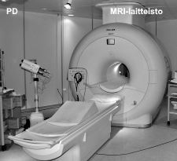

PSYKOLOGIAOPPIMATERIAALIA NETISSÄ VUODESTA 1999 LÄHTIENPSYKOLOGIAN PIKALINKIT PSYKAN VIDEOABIKURSSIT: PSYKOLOGIAN MAAILMA -VIDEOKERTAUSKURSSI ABEILLE (vlogi) - UUSI OPS!! PS7 ABI KERTAUSKURSSI (opetustilanne) - VANHA OPS (OPS 2016-): PS1 Psyykkinen toiminta ja oppiminen PS2 Kehittyvä ihminen PS3 Tietoa käsittelevä ihminen PS4 Tunteet, psyykkinen hyvinvointi ja mielenterveys PS5 Yksilöllinen ja yhteisöllinen ihminen
PS3 valtakunnallinen OPS |
PS3 Tietoa käsittelevä ihminen
Miten käytät näitä muistiinpanoja tehokkaasti? 1. LYHYT JOHDANTO KOGNITIIVISEEN PSYKOLOGIAAN 1.1 Kognitiivisen psykologian tutkimuskohteet - Kognitiivinen eli tietoon liittyvä - Tiedon vastaanotto, käsittely, varastointi ja jakaminen 1.2 Skeemat ja havaintokehä - Skriptit, kognitiiviset kartat, tietokokonaisuudet 2. AIVOT JA HERMOSTO - TIEDOLLISEN TOIMINNAN PERUSTA 2.1 Hermoston rakenne ja toiminta - Hermosolun rakenne ja synapsi - Isot aivot ja aivokuoren toiminnalliset alueet - Aivojen keskeiset osat: aivokurkiainen, talamus, hypotalamus, hippokampus, amygdala- eli mantelitumake - Aivoverkosto (retikulaarijärjestelmä) sekä limbinen järjestelmä 2.2 Aivojen kuvantaminen ja aivotoiminnan häiriöt - Rakenteelliset ja toiminnalliset kuvausmenetelmät - Aivojen vauriot ja häiriöt 2.3. Psyykkisten toimintojen hermostollinen säätely - Aistien, liikkeiden, tunteiden, vireyden, muistin, puheen hermostollinen säätely 3. TIEDON VASTAANOTTO: HAVAITSEMINEN 3.1 Havaintopsykologian perusteet - Havaitsemisen hermostollinen perusta - pikakatsaus aistien ja aivojen yhteispeliin - Näköaistin toiminta 3.2 Tarkkaavaisuus - Valikoiva ja jaettu tarkkaavaisuus - Dikoottisen kuuntelun koe - Tarkkaavaisuusteoriat 3.3 Havaitseminen ja havaintojen jäsentyminen - Informaatioähky ja sensorinen deprivaatio - Hahmottamisen kokonaisvaltaisuus sekä hahmolait - Kaikkea emme kykene havaitsemaan - Illuusiot - Konstanssi-ilmiö 3.4 Syvyyden havaitseminen - Binokulaarisuus - Monokulaariset vihjeet 3.5 Esimerkki havaintopsykologisten tutkimusten soveltamisesta: LIIKENNEPSYKOLOGIA 4. TIEDON VARASTOINTI: MUISTI 4.1 Muistitutkimuksen vaiheita - Ebbinghausin unohtamiskäyrä - Atkinson ja Shiffrin muistin monisäilömalli 4.2 Aistimuisti - ikoni- ja kaikumuisti 4.3 Työmuisti - Alan BADDELEYn työmuistin rakenne - Hippokampus ja työmuisti (tapaus HM) 4.4 Säilömuisti - Asiamuisti - Taitomuisti - Asioiden pysyvä tallennus 4.5 Unohtamisteorioita - Amnesiat 5. TIEDON KÄSITTELY: AJATTELU 5.1 Ihmisen ajattelu on käsitteellistä - Käsitteiden ja kielellisyyden kehittyminen 5.2 Taitava ajattelu ja asiantuntijuus - Päätöksenteko ja päätöksentekovirheet - Ihmisen kyky ratkaista ongelmia - Ekspertti on asiantuntija, tietyn alueen huippuosaaja - Ihminen ei vain toista oppimaansa, vaan luo jatkuvasti uutta 6. TIEDON JAKAMINEN: KOMMUNIKAATIO JA VIESTINTÄ 6.1 Kieli, käsitteet ja ajattelu kulkevat käsi kädessä - Kieli kehittyy konkreettisesta abstraktiin - Käytämme kieltä luovasti - Noam Chomskyn generatiivisuus sekä kielen pinta- ja syvärakenne 6.2 Kielen ja puheen hermostollinen perusta - Brocan ja Wernicken alueet aivoissa - Motorinen ja sensorinen afasia 6.3 Nonverbaalinen viestintä - Nonverbaalinen viestintä on vahvempi tunneilmaisussa kuin sanallinen - Elekieli - Muuta yleistä viestinnästä. © Jyrki Rossi, 2017 1. LYHYT JOHDANTO KOGNITIIVISEEN PSYKOLOGIAAN1.1 Kognitiivisen psykologian tutkimuskohteet
• Kognitiivinen psykologia tutkii ihmisen (osin eläinten) tiedonkäsittelyä  1. Aistien ohjaama tiedonkäsittely (aistien kautta tuleva tieto ympäristöstä vaikuttaa toimintaan) 2. Sisäisten mallien ohjaama tiedonkäsittely (ihmisen skeemat, käsitykset ja odotukset ts. sisäiset muistitiedot ohjaavat toimintaa) • Kognitiiviset toiminnot ovat yhteydessä tunteisiin (ja motiiveihin) ja fysiologisiin tapahtumiin - Väsyneenä tai masentuneena et esimerkiksi jaksa keskittyä havainnoimaan (kuuntelemaan) opettajan opetusta. • Kognitiiviset toiminnot ovat keskeisiä ympäristöön sopeutumisessa. Ihminen esimerkiksi omaksuu yhteisön tavat, normit, kielen jne. - Sosiaaliset sekä kulttuuriset tekijät vaikuttavat ihmisen tiedollisiin toimintoihin. • Tiedonkäsittelyn kaksi päätyyppiä (Shiffrin ja Schneiderin mukaan): 1. Automaattinen prosessointi - Nopeaa ja vaivatonta - Tapahtuu kuin itsestään - Harjoittelun tuloksena (esim. tanssiminen, pianon soitto) 2. Kontrolloitu prosessointi - Hidasta, edellyttää ponnistelua - Vaatii keskittymistä - Kun jotakin asiaa harjoitellaan © Jyrki Rossi, 2017 1.2. Skeemat eli sisäiset mallit
• SKEEMAT ovat yksilön muistissa oleva kokemusten, tietojen, taitojen ja toimintojen varasto, jota käytetään toiminnan ohjauksessa. (Skeema-käsitteen "loi" filosofi Immanuel Kant, mutta psykologian puolella sen otti varhain käyttöön lapsipsykologi Jean PIAGET, kognitiivisen kehityksen tutkija).  © Jyrki Rossi, 2017 2. AIVOT JA HERMOSTO2.1. Hermoston rakenne ja toiminta
• HERMOSOLUT eli neuronit ovat tiedonvälitykseen erikoistuneita soluja.  1) Sensoriset hermosolut aistinelimissä vastaanottavat aistitietoa 2) Motoriset hermosolut kuljettavat toimintakäskyt lihaksiin ja sisäelimiin 3) Välineuronit toimivat em. välissä. • Hermoverkko = neuronien järjestäytynyt joukko, joka vastaa jostakin toiminnosta (esim. silmän verkkokalvo) • Synapsi on kahden hermosolun välinen liitoskohta, jossa hermoimpulssi joko kuolee tai jatkaa matkaansa - Synapsien plastisiteetti (joustavuus) eli synapsien rakenteen muuttuminen käytössä auttaa mm. oppimisessa • EKSTRA: Jo vuonna 1949 neuropsykologi Donald Hebb oletti, että mitä enemmän presynaptinen neuroni (synapsia edeltävä neuroni) "pommittaa" vastaanottavaa neuronia (postsynaptinen neuroni), sitä enemmän sen synapsi kasvaa ja samalla vahvistuu myös muiden kyseiseen synapsiin liittyneiden neuronien presynaptinen välittäjäainetuotanto. Tämä Hebbin teoria toteutuu mm. oppimisessa. Opeteltaessa intensiivisesti vaikkapa kitaransoittoa, viesti kulkee hermosoluja pitkin yhä laajenevaan synapsiin, jolloin muidenkin saman ketjun hermosolujen toiminnot tehostuvat. Seuraa pysyvä muutos liikehermosolujen (motoneuronit) synapseissa ja samalla pysyvä oppiminen. - 2000-luvulla on pystytty todistamaan, että Hebbin teoria oli aikaansa edellä. Nykyään käytetään käsitettä pitkän aikavälin potentiaatio (LTP eli long-term potentiation). Kitaransoiton säännöllinen harjoittelu aiheuttaa pitkän aikavälin potentiaation ja muuttaa synapsia. Hiirikokeissa eläinten ja ihmisten oppimisessa tärkeään tumakkeeseen amygdalaan (mantelitumake) ruiskutettiin lääkeainetta, joka esti LTP-tapahtuman. Hiiri ei enää ehdollistunut edes kivuliaisiin sähköiskuihin. Vuonna 2000 Joe Tsienin tutkimusryhmä loi geenimuunnellun hiiren, jolle he antoivat nimen "Doogie" erään vanhan tv-sarjan poikaneron mukaan. Tutkijaryhmä oli huomannut, että postsynaptisia reseptoreita, jotka liittyivät pitkän aikavälin potentiaation toimintaan, oli kahdenlaisia: voimakkaita ja heikkoja. Doogiesta luotiin voimakkaasti LTP-toiminen hiiri. Opetettaessa Doogieta ja muita hiiriä, Doogie toimi oppimiskokeessa usein samalla tavalla kuin toiset hiiret, mutta erittäin pian se oli muita hiiriä selvästi älykkäämpi, nopeampi oppimaan ja sen muisti oli paljon parempi. • PEILISOLUT ovat hermosoluja, jotka aktivoituvat liikkuessamme ja toimiessamme, mutta myös silloin, kun näemme toisten tekevän joitakin asioita. Tutkijat ovat yhdistäneet peilisolut mallioppimiseen. Kun katsot henkilöä, joka näyttää vanhojen tanssien askeleita, peilisolusi aktivoituvat ja se nopeuttaa sinun itsesi kykyä oppia vanhojen tanssin askelkuvioita. - peilisolut sijaitsevat ihmisellä lähinnä otsalohkon alueilla, jotka vastaavat aikomuksistamme, tunteistamme ja liikkeistämme sekä päälaenlohkolla aluella, joka liittyy aistimuksiin. - Peilisolut löydettiin makakiapinoilta, kun italialaisen Parman yliopiston tutkijat ( Giacomo Rizzolattin johdolla.) 1990-luvun alussa tutkivat apinoiden aivoihin kiinnitetyillä laitteilla, mitkä hermosolut aktivoituivat apinoiden kurkottaessa ruokaa itselleen. Kun laboratorion työntekijä teki saman liikkeen apinan katsellessa, laite osoitti samojen hermosolujen aktivoituvan pelkästä katselusta. - Esimerkiksi, kun 10 minuutin ikäiselle ihmisvauvalle (tai apinavauvalle) näytetään kieltä, vauva saattaa vastata näyttämällä kieltä - peilisolujen aktivoituessa - vaikkei vauva edes tiedosta olevansa olemassa, saati että hänellä on kasvot ja kieli. • Tieto siirtyy solun sisällä sähköisesti ja solujen välillä (synapseissa) kemiallisesti  - Synapsirakkuloista erittyy välittäjäainetta - Keskushermoston tärkeimpiä välittäjäaineita (joihin törmäämme psykan kursseilla) ovat mm.: 1) GABA eli gamma-aminovoihappo, joka on yleisin ja sen tehtävä on vaimentaa tai lopettaa viestin kulku hermosoluissa (on siis ns. inhiboiva välittäjäaine) - Monet rauhoittavat lääkkeet (esim. bentsodiatsepiinit) kohottavat aivojen GABA-aktiivisuutta, jolloin hermoston toiminta rauhoittuu ja hidastuu. 2) Glutamaatti toimii päinvastoin kuin GABA, kiihdyttäen (eli eksitoiva välittäjäaine) hermosolujen viestintää. Glutamaatti on tärkeä mm. oppimisessa. 3) Dopamiini on monella tapaa vaikuttava välittäjäaine, jota syntyy hypotalamuksen tyvitumakkeissa. Dopamiini vaikuttaa toimintaamme säädellen liikkeitämme. Se vaikuttaa riippuvuuksien syntyyn ns. mielihyvätumakkeen (nucleus accumbens) kautta. Dopamiini energisoi meitä, piristää ja tehostaa myös oppimista. 4) Serotoniini on tärkeimpiä mielialaan vaikuttavia välittäjäaineita. Siksi lääketeollisuus tuottaa lääkkeitä, jotka pitävät serotoniinitasoa yllä tai lisäävät sitä (SSRI-lääkkeet ja MAO-inhibiittorit). Serotoniinin puute voi vaikuttaa aggressiivisuuden lisääntymiseen ja ruokahaluun, erityisesti makean himoon. Liika serotoniini voi vähentää seksihaluja. Suurin osa serotoniinista valmistuu suolistossa kulkeutuen verenkierron mukana. • HERMOSTO jakautuu keskushermostoon (aivot ja selkäydin) sekä ääreishermostoon (somaattinen ja autonominen hermosto) KESKUSHERMOSTO: • Isot aivot jakautuvat oikeaan ja vasempaan aivopuoliskoon (hemisfääriin), joita yhdistää aivokurkiainen eli corpus callosum (on naisilla paksumpi mahdollistaen aivopuoliskojen tehokkaamman yhteistyön). - Lateralisaatio eli aivopuoliskojen työnjako: vasen puolisko säätelee kehon oikeaa puolta, oikea taas vasenta puolta - Useimmilla ihmisillä (oikeakätisillä ja suurella osalla vasenkätisistä) vasen aivopuolisko hallitsee ja ohjaa sekä kielellisiä että matemaattisia taitoja - Oikeaa aivopuoliskoa on pidetty luovuuden, avaruudellisen hahmottamisen ja sosiaalisuuden ohjaajana - Nykytutkimus näkee aivopuoliskojen perinteisen työnjaon hieman ongelmallisena, koska aivopuoliskojen yhteistyö on lopulta niin tiivistä. • Aivokuori (cortex) on n. 3 mm paksuinen harmaa poimuttunut ihmisen tietoisen ja tahdonalaisen toiminnan keskus. Aivokuori jakautuu rakenteellisesti otsa-, ohimo-, päälaen- ja takaraivolohkoihin ja toiminnallisesti sensorisiin aistialueisiin, motorisiin liikealueisiin ja assosiaatio- eli yhteysalueisiin. - Takaraivolohkolla näkö ns. visuaalinen cortex - Ohimolohkolla kuulo ns. auditorinen cortex, ja makuaisti - Päälaenlohkolla ihon aistien ja jänne- ja nivelaistien alue sekä liikkeitten säätely - Otsalohko huolehtii monista tunne-elämän toiminnoista, premotorinen alue säätelee tahdonalaisia liikkeitä - Wernicken alue ohimolohkolla (vasemmalla) puheen ymmärtämiseen (vaurio ns. sensorinen afasia). Uusi tutkimus on kyseenalaistanut Wernicken alueen merkityksen puheen ymmärtämiselle. Puheen ymmärtäminen on paikallistettu useammille alueille ohimolohkolla Wernicken alueen läheisyyteen, mutta vähemmän itse Wernicken alueelle. - Brocan alue otsalohkolla (vasemmalla) puheen tuottamiseen (vaurio ns. motorinen afasia) • Pikkuaivot (cerebellum) ohjaavat mm. tiedostamattomia ja automaattisia liiketoimintoja kuten tasapainon säilyttäminen, käveleminen tai huippumuusikon kitaransoitto. - Pikkuaivot ovat mukana oppimisessa ja niinpä muistijälkeä on yritetty etsiä myös pikkuaivoista. Tunnetuin tutkimus tehtiin kanikokeella (McCormick & Thomson, 1984), jossa kanin silmään puhallettiin ilmaa, joka aiheutti kanilla silmän räpäytyksen. Ilman puhaltamista ennen annettiin äänimerkki, jolloin kani oppi eli klassisesti ehdollistui sulkemaan silmänsä ennen ilman tuloa > kanille oli syntynyt muistijälki - vrt. PAVLOVin koirakoe). Muistijäljen huomattiin syntyneen juuri pikkuaivoihin, joka on automatisoituneiden toimintojen ohjauskeskus. • Aivorunko (väliaivot, keskiaivot, aivosilta, ydinjatke ja aivoverkosto) yhdistää isot aivot selkäytimeen • Talamuksen kautta kulkevat aisteista tietoa tuovat radat aivokuorelle (nousevat radat) ja aivokuorelta lihaksiin toimintakäskyjä vievät radat (laskevat radat). Talamus on tärkeimpiä tumakkeitamme yhdessä hypotalamuksen, amygdalan ja hippikampuksen kanssa. Talamus säätelee vireyttä. Kaikista aisteistamme paitsi hajuaistista tulevat viestit aivokuorelle talamuksen kautta. - Talamus on muodoltaan kuin pienikokoiset isot aivot, muodostuen kahdesta noin 3 cm pitkästä ja 1,5 cm leveästä osasta, jotka ovat kiinni toisissaan. Talamus on harmaata ainetta ja nykyisin on voitu tarkkaan paikantaa, mihin osaan talamusta minkäkin aistin (paitsi hajuaisti) hermoradat kulkeutuvat ennen kuin ne menevät omalle aistinalueelleen.    - Hypotalamus sana tulee yksinkertaisesti siitä, että se sijaitsee talamuksen alla. - Ärsyttämällä rotan hypotalamuksen ventromediaalitumaketta asettamalla elektrodi tarkasti tuohon kylläisyyttä säätelevään keskukseen, rotat saatiin syömään koko ajan, kunnes ne kuolivat sisäelinten repeämiseen. - Hypotalamuksen suprakiasmaattinen tumake on elimistön kello, joka mahdollistaa sen, että elimistömme (kuten uni ja valve) noudattaa ns. sirkadiaanista 24 tunnin vuorokausirytmiä. - On sanottu, että mikäli jostakin aivojen osasta joutuisi antamaan edes pienen osasen pois, niin sitä ei tulisi missään tapauksessa antaa hypotalamuksesta (hypotalamus on kooltaan rypälemäinen ja pieni), nimittäin yhtäkkiä riippuen osasesta sinä et enää söisi, tai söisit itsesi hengiltä, et nukkuisi tai olisit aggressiivinen koko ajan. • Hippokampus (joka on merihevosen muotoinen, siitä nimitys) on ratkaisevan tärkeä asioiden kiinnittymiselle muistiin. Henkilö, jolta hippokampus on vaurioitunut (kuten Henry Molaison tai Clive Wearing) eivät opi/muista enää yhtään mitään uutta, mitä havaitsevat tai kokevat. Mikään ei enää tallennu muistiin. • Amygdala eli mantelitumake liittyy hippokampuksen tavoin uuden oppimiseen, erityisesti tunnepitoisen aineksen muistamiseen. - Amygdala lähettää ihmisen aivokuorelle tunneviestejä, kun esimerkiksi tulkitsemme toistemme ilmeitä tai eleitä. Ohimolohkolla, kulkiessaan limbisen järjestelmän kautta otsalohkolle, tunneviesti normaalisti suodattuu siten, että ihminen saa oikeanlaisen tunnekokemuksen asiasta. Murrosikäinen nuori ei kykene tulkistemaan äitinsä huolestunutta ilmettä oikein, vaan amygdala lähettää tunneryöpyn, joka suodattumattomana kulkee tietoisuuteen ja tulkitsee äidin huolestuneen ilmeen vihaiseksi ilmeeksi. Nuoren aivot ovat juuri voimakkaan tunnemyllerryksen alla kehittyessään vähitellen aikuisen aivoiksi. • Ydinjatke yhdistää selkäytimen aivoihin ja säätelee sydämensykettä ja hengitystä • Selkäydin hoitaa mm. refleksit. Riittävän voimakkaissa ärsykkeissä, kuten sormen osuessa esimerkiksi neulaan tai kuumalle liedelle, ihminen toimii salamannopeasti reagoiden. Refleksi on siis suojaheijaste, joka tapahtuu siten, että tuntoreseptorin ärsytyksestä ääreishermoston sensoriset radat kuljettavat viestin selkäytimeen (spinal cord), josta se palaa välittömästi motorista rataa pitkin takaisin aiheuttaen käden tempaisun pois kivun aiheuttajasta. Viesti ei käy lainkaan talamuksessa ennen tapahtumaa. Tapahtuma tiedostetaan vasta refleksin jo tapahduttua. - Esimerkiksi olet vahingossa pudottaa kännykkäsi, kätesi ennättää refleksimäisesti jopa ilmasta napata kännykän takaisin turvaan sensoristen neuronien, selkäytimen heijasteen ja motoristen neuronien ansiosta. Viesti ei ennätä käydä aivoissa asti. Vasta tapahtuman jälkeen viesti on mennyt aivoihin normaalia reittiään talamuksen kautta aivokuorelle ja tietoisuuteen. • Aivoverkosto (retikulaarimuodostelma, RAS) säätelee vireystilaa ja orientaatiota ÄÄREISHERMOSTO • Somaattinen hermosto käsittää kaksi osaa: 1) sensoriset eli tuovat hermoradat, jotka kuljettavat aistitietoa reseptorista keskushermostoon ja 2) motoriset eli vievät hermoradat kuljettavat ärsytyksen keskushermostosta lihaksiin ja rauhasiin • Autonominen (tahdostariippumaton) hermosto 1) Sympaattinen (aktivoituu toimintatilanteessa, välittäjäaine noradrenaliini) 2) Parasympaattinen (lepotilanteessa, varastoi energiaa, välittäjäaine asetyylikoliini)  - Hormonit ovat kemiallisia aineita, jotka veren välityksellä leviävät kohdealueeseen ja vaikuttavat haluttuja muutoksia • Aivolisäke eli hypofyysi säätelee muiden sisäeritysrauhasten toimintaa sekä kasvua • Kilpirauhanen erittää tyroksiinia, joka vaikuttaa suorituskykyyn ja vireyteen sekä aineenvaihduntaan ja kasvun nopeuteen - Vajaatoiminta aiheuttaa aikusella vireyden laskua, vetämättömyyttä; liikatoiminta taas ahdistusta, rauhattomuutta ja ärtyvyyttä • Lisämunuaiset erittävät stressitilanteessa adrenaliinia (ydin) sekä kortikosteroideja (kuorikerros) pitäen yllä elimistön puolustusjärjestelmää • Sukurauhaset erittävät sukupuolihormoneja: estrogeenia ja progesteronia (naisen munasarjat), testosteronia (kivekset) vaikuttaen sukupuoliseen käyttäytymiseen. © Jyrki Rossi, 2017 2.2. Aivojen kuvantaminen ja aivotoiminnan häiriöt
• Neuropsykologia 1) tutkii ihmisen aivojen ja hermoston sekä mielen välistä suhdetta tieteellisin (empiirisin) menetelmin sekä 2) selvittää hermoston vaurioiden ja häiriöiden syitä psyykkiselle toiminnalle. 
- MRI:llä (magnetic resonance imaging) eli magneettiresonanssikuvauksella tutkitaan aivojen rakenteita voimakkaassa magneettikentässä. MRI on 2010-luvun Suomessa ja maailmalla tärkein ja tarkin kudosten, myös aivojen tutkimusmenetelmä. MRI:ssä ei käytetä haitallisia röntgensäteitä. Potilas viedään putken sisään, jossa voimakkaassa magneettikentässä (nykyisin usein 1,5 - 3 teslaa) mitataan vety-ytimien lähettämää radiotaajuista signaalia. (Arkikielellä "voimakkaassa magneettikentässä ravistellaan ihmisen vetyatomeja" ;). Aivot sisältävät runsaasti vetyä, kuten muukin pehmytkudos (rasva- ja vesipitoiset kudokset), ja näin niistä saadaan erinomaisen tarkkoja kolmiulotteisia kuvia, joista voidaan diagnosoida pienimpiäkin yksityiskohtia.- Aivojen rakenteellisen kuvaamisen rinnalle on tiede kehitellyt aivojen TOIMINNALLISUUTTA tutkivat kuvausmenetelmiä, kuten fMRI, MEG, PET ja nTMS. - fMRI eli funktionaalinen magneettiresonanssikuvaus: mitataan aivojen verenkiertomuutoksia (happimuutoksia) voimakkaalla magneettikentällä, samalla laitteistolla kuin edellinen MRI-kuvaus. fMRI paljastaa aivojen toiminnalliset alueet. Tehtäessä jotakin tehtävää, aivotoiminta vilkastuu alueella, ja tämä pystytään paikantamaan. - MEG eli magnetoenkefalografia: mitataan aivojen sähköistä viestintää (hermosoluissa kulkee sähkövirta, lepojännite on n. -70mV eli millivolttia). Hermosolujen viestintä synnyttää heikkoja magneettikenttiä, joita laitteistolla kyetään mittaamaan. MEG-laite eroaa uloisesti MRI-laitteistosta, sillä Suomessa kehitetyissä laitteissa useimmiten ollaan istuvassa asennossa ja vain pää on laitteen sisällä. (MEG on kehitelty Suomessa alkujaan Espoon Otaniemen Teknillisen Fysiikan osastolla Toivo Katilan johtaman työryhmän aloittamana. Työtä on jatkettu nykyisessä Aalto-yliopistossa, jossa kehitellään 2010-luvulla MEG ja MRI-kuvauksen yhdistävää laitteistoa) - PET eli positroniemissiotomografiassa mitataan aivoihin kulkeutuneita lyhytikäisiä radioaktiivisia isotooppeja, joita on ruiskutettu verenkiertoon; verenkierto vilkastuu alueilla, joissa tapahtuu aivotoimintaa (esim. lukiessa). Esimerkiksi laskeminen, lukeminen, musiikin kuuntelu aktivoi tiettyjä aivoalueita ja tämä saadaan näkymään kuvauksessa. - TMS eli transkraniaalinen magneettistimulaatiossa aivojen hermosoluja aktivoidaan magneettikentällä, joka saadaan aikaiseksi pään päälle kallon ulkopuolelle asetettavalla stimulaatiolaitteella (kuparikela, johon johdetaan sähkövirtaa sykäyksittäin). Aivotoiminnan aktivaatiomuutoksia voidaan sitten mitata EEG-käyrän avulla. TMS on erittäin uusi menetelmä (2000-luvulta), jonka kehittelijä on Harvardin yliopiston lääketieteen laitoksen neurologian professori esp. Alvaro Pascual-Leone (1961-). • Monet aivojen toimintahäiriöt liittyvät aivoverenkierron häiriöihin tai verisuonivaurioihin. Angiografialla eli verisuonten varjoainekuvauksella kyetään nykyisin tietokoneiden avulla saamaan aivoverisuonista kolmiulotteista kuvaa, jossa suonen rakenne ja vauriot tulevat hyvin esiin (olen itse ollut aivoverenvuotojeni vuoksi 9 kertaa tällaisissa kuvauksissa Kuopion yliopistollisessa sairaalassa). Kuvauksessa useimmiten nivusvaltimon kautta pitkän katetrin avulla aivoverenkiertoon ruiskutetaan röntgensäteitä läpäisemätöntä varjoainetta. • Aivoston vauriot ja toimintahäiriöt ilmenevät niin fyysisinä, psyykkisinä kuin sosiaalisina oireina. • Aivojen vauriot ja toimintahäiriöt kuuluvat lääketieteen alaan, mutta käsittelen niitä tässä hyvin lyhyesti. - Ylioppilaskirjoituksissa on tärkeämpää tuntea aivojen eri osien (aivokuoren alueiden, tumakkeiden jne.) osallisuus ihmisen toimintaan ja käyttäytymiseen. Ei niinkään esimerkiksi kuntoutus- ja lääketieteellinen hoito aivovauriotapauksissa. • Aivovaurio on aivokudoksen vaurio (pysyviä) - Aiheuttajia: iskut, kallovammat, myrkytykset, aivojen verenkiertohäiriöt (aivoverenvuodot, aivoinfarktit), kasvaimet - Esimerkiksi aivoinfarktipotilaan kuntoutuksella toinen viereinen aivoalue saattaa ryhtyä ohjaamaan tuhoutuneen alueen toimintoja • Aivojen toimintahäiriöt ovat toiminnallisia häiriöitä ilman aivokudoksessa havaittavia muutoksia - Tilapäisiä aiheuttavat mm. myrkytykset, päihteet, sairauskohtaukset (tajunnan menetys) • Epilepsia on aivojen sähköisen toiminnan häiriö (poikkeavia sähköpurkauksia syvällä aivoissa, jotka heijastuvat sitten aivokuorelle), johon liittyy tajunnantilan muutoksia, havainto- ja ajatushäiriöitä, kouristuksia ja tunne-elämän häiriöitä (0,5% väestöstä) • Alzheimerin tauti aiheuttaa tasaisesti etenevän tylsistymisen (dementian). Aivoissa normaalia vähemmän asetyylikoliini välittäjäainetta. • Korsakovin syndrooma: runsas alkoholin käyttö vaurioittanut väliaivoja, jolloin uusien asioiden mieleenpainaminen vaikeutuu, vitamiinihoito (tiamiini) ei enää auta • MS-tauti eli multippeliskleroosi (keskushermoston pesäkekovettumatauti): hermosyytä eli aksonia suojaava myeliinituppi vioittuu tai katoaa, jolloin hermoimpulssi ei etene hermosolussa. Oireina näköhäiriöt, raajojen lihasheikkous, koordinaatio-ongelmat ym. © Jyrki Rossi, 2017 2.3. Psyykkisten toimintojen hermostollinen säätely
• Aivoissa tietyt alueet ovat erikoistuneet vastaamaan tietyistä elintoiminnoista. Tietyt aivoalueet säätelevät esimerkiksi liikkeitämme ja onkin helppo päätellä, että koska oikea aivopuolisko vastaa kehon vasemman puolen säätelystä, niin vasemman puolen sekä tuntoaistimusten että tahdonalaisten liikkeittemme säätely tapahtuu oikealla aivokuorella.  - Paikkakoodaus - eri aisteista tulevat ärsykkeet koodataan aina tietyn tyyppisiksi, esim. silmästä tulevat ärsykkeet koetaan aina valona (vrt. silmän hierominen > valoaistimuksia). - Primaarilla tuntoalueella aivokuorella (sensorinen homunculus) voidaan hahmottaa eri tuntoaistien edustus ns. homunculuksen (pikku-ukon) muodossa (vastaavasti liikeaivokuorella motorinen homunculus). - Aivojen sensoristen alueiden vauriot aiheuttavat agnosiaa, toimivan aistinelimen kautta tulevan tiedon hahmotus- ja tunnistushäiriöitä. • LIIKKEIDEN hermostolliseen säätelyyn osallistuvat useat aivojen alueet. - Otsalohkon etuosan motoriset alueet suunnittelevat ja ohjelmoivat tahdonalaiset liiketoiminnot. - Oikea aivopuolisko antaa käskyt kehon vasemmalle, ja vasen puolisko oikealle puolelle. - Primaari liikealue toimeenpanee liikesarjaan (vrt. motorinen homunculus) - Pikkuaivot osallistuvat nopeiden ja tarkkaa ajoitusta vaativien sekä automatisoituneiden liikkeiden koordinointiin. - Cp-vamma (cerebral palsy) on tav. sikiökauden aikainen vaurio aivojen liikealueella ja näkyy liiketoimintojen vaikeutena. • MUISTI ja OPPIMINEN johtuu muutoksista hermoverkoissa, synapsien toiminnassa ja yksittäisissä hermosoluissa. - Katso aiheesta enemmän luvusta 4. • KIELEN ja PUHEEN kannalta keskeisiä aivokuoren alueita ovat Brocan (puheen tuottaminen) ja Wernicken (puheen ymmärtäminen) alueet. - Katso aiheesta enemmän luvuista 5 ja 6. © Jyrki Rossi, 2017 3. TIEDON VASTAANOTTO: HAVAITSEMINEN3.1 Havaintopsykologian perusteet
• Havaitseminen on elintärkeää, sillä muutoin eläinyksilöt jäisivät toisten saaliiksi kykenemättä reagoimaan vaaratilanteessa. - Sokeatäplä on silmän takaosassa oleva kohta, josta näköhermo lähtee. Sokeassa täplässä ei ole lainkaan näköaistinreseptoreja, joten siinä ei tapahdua näköaistimusta. Sokean täplän voit testata piirtämällä rastin ja ympyrän silmiesi väliselle etäisyydelle paperille. Sulje nyt vasen silmäsi ja katso rastia ja liikuta paperia lähemmäksi tai kauemmaksi itseäsi. Hetken päästä huomaat ympyrän katoavan näkökentästäsi. Ympyrä on osunut oikean silmäsi näköhermon päähän eli sokeaan täplään. - Tutkimus on kyennyt löytämään tietyt alueet aivokuorelta (fusiform cyrus), jossa tapahtuu kasvojen tunnistus. Aiemmin esitetyllä TMS-laitteella on hetkellisesti ärsytetty tätä kasvojen tunnistus aluetta tuloksena, ettei ihminen ole enää kyennyt tunnistamaan kasvoja, mutta on silti kyennyt tunnistamaan edelleen vaikkapa taloja. - Mainittu fusiform cyrus -alue on myös tärkeässä roolissa erikoisessa ilmiössä nimeltä SYNESTESIA Synestesia sana tulee kreikankielestä ja tarkoittaa kirjaimellisesti aistimusten yhdentymistä. Synesteetikolla toisen aistin alaan liittyvä ilmiö (kuten vaikkapa näköaistin värikokemus) yhdistyy toisella aistilla todellisuudessa koettuun ilmiöön (esim. sävelten kuuleminen). Ihminen voi esimerkiksi nähdä numerot aina tietyn värisinä. Synestesia on periytyvä ominaisuus, mutta saattaa hypätä useankin sukupolven yli ennen uudelleen ilmestymistä suvun jälkeläisessä. Vastasyntyneellä vauvalla on synestettisiä kokemuksia, mutta aivojen kehittyminen karsii näitä kokemuksia tuottavat hermoyhteydet pois suurimmalta osalta vauvoista paitsi niiltä, jotka jäävät sitten tavallisesti loppuelämäkseen synesteetikoiksi. Synesteetikoita arvioidaan olevan noin 1-4 prosenttia väestöstä. Synestesian on todettu olevan yleisempää taiteilijoilla. Niinpä tyypillisimpänä synestesia ilmenee numeroiden, kirjainten, äänteiden, sävelten, sointujen ym. ilmenemisenä värillisinä. Tärkeimpiä nykyisiä synestesian tutkijoita ovat olleet intialais-amerikkalainen V.S. Ramachandran (1951-), joka on tutkinut myös aavejäseniä ja niihin liittyvää kipua (aivokuorelle jää raajan amputoinnin jälkeen edelleen kyseistä raajaa vastaava alue, joka lähettää meille välillä vääriä tuntoaistimuksia). Oheinen kuva osoittaa synesteetikon näköaistimuksen. Sinä pystyt tarkkaavaisuutesi avulla poimimaan nelosten joukosta kakkoset (vasen puoli kuvasta). Synesteetikko näkee kakkoset värillisinä (kuten oikean puoleisessa kuvassa punaisina) ja kykenee helposti hahmottamaan kakkosten muodostavan kolmion kuvioon. © Jyrki Rossi, 2017 3.2 Tarkkaavaisuus
• Tarkkaavaisuutta säätelee otsalohkojen etuosat (otsalohko on ikäänkuin ihmisen lennonjohtotorni). 1. Ärsykkeeseen liittyvät tekijät (ärsyke) - Ärsykkeen voimakkuus - Ärsykkeeseen on adaptoiduttu ja vasta voimakas muutos aiheuttaa tarkkaavaisuuden heräämisen 2. Subjektiivinen tilanne (havaitsija) - Havaitsijan tunnetila, vireys, motiivit, tarpeet - Havaitsijan fysiologinen tila - Havaitsijan kokemukset ja tieto 3. Sosiaalinen tilanne (tilanne, ympäristö) - Aikaisemmat tapahtumat, muut henkilöt - Ympäristön asenteet, arvostukset ja normit, stereotypia jne. • Tarkkaavaisuus voi olla 1) näkyvää (overt eli avointa) ja toisaalta 2) kätkettyä (covert eli peiteltyä). - Näkyvä tarkoittaa sitä, mihin katse on suunnattu esim. keskustellessa silmiin, mutta ihminen saattaa samalla katsoa henkilön jotakin muutakin yksityiskohtaa kätketysti eli esim. henkilön nimilappua, tatuointia tai muuta kiinnostavaa asiaa. Kätketty on siis sitä, mitä todellisesti tarkkaillaan. Tarkkailu tehdään kätketysti, koska tahdotaan olla kohteliaita tai esim. keskustellessa naisen rintojen katseleminen koetaan yleisesti moraalinormit ylittäväksi. • Coctail party -ilmiöllä tarkoitetaan tarkkaavaisuuden kohdistumista merkittävään seikkaan (esim. oma nimi) aineistossa, johon varsinaisesti ei kiinnitetä huomiota • Keskittyessään tiettyyn asiaan, ihmisen on vaikea huomata muita edes räikeitäkään asioita. - Daniel Simons (1969-) teki kokeita, joilla hän osoitti ihmisen ns. "tarkkaavaisuussokeuden"/valikoivan tarkkaavuuden (inattentional blindness). Vuonna 1999 tutkimuksessaan hän pyysi opiskelijoitaan seuraamaan koripalloa heitteleviä henkilöitä ja laskemaan tarkasti, kuinka monta kertaa valkopaitaiset syöttävät toisilleen palloa. Useilta syöttöjä tarkkailevilta henkilöiltä jäi huomaamatta sateenvarjon kanssa kentälle kulkenut nainen ja jopa gorillapukuun keskelle kenttää saapunut henkilö. • Tottumisen myötä emme kiinnitä enää huomiota esim. seinäkellon tikitykseen (joka yökylään tullutta ystävää kyllä häiritsee) tai uimareissulla hetken vedessä oltuamme sen kylmyyteen. Samoin autolla ajaessamme totumme automme ääneen, kunnes tarkkaavaisuutemme herää vasta, kun auto alkaa pitää usein vaikka hyvin pientäkin lisä-ääntä. - Katso tästä linkistä video Simonsin kokeesta. • Jaettu tarkkaavaisuus: tarkkaavaisuus voidaan suunnata eri kohteisiin (sitoa kengännauhoja, kuunnella musiikkia, katsoa televisiota, jutella ystävän kanssa ja kuulla kissan käyvän hiekkalaatikolla). • Jotkut psykologit (engl. psyk. Donald Broadbent 1926-1993) väittävät, ettemme pysty lainkaan jakamaan tarkkaavaisuuttamme usean asian kesken ns. suodatinteoria (yllä varhaisen valinnan teoria) eli Broadbent's filter model of attention (tämän vuoksi pikkulasten kanssa uimaan lähteneen vanhemman ei tule lukea lehteä samalla, kun lapset ovat altaassa/järvessä). • Yksi tunnetuimpia naispsykologeja, engl.-yhdysv. Anne Treisman (1935-) kehitteli näköaistitutkimuksillaan ns. suodatin-vaimennusteorian (Treisman's Two-Stage Feature integration theory). - Dikoottisen kuuntelun koekin osoittaa, että aivot ottavat vastaan informaatiota molemmilla korvilla, mutta toiseen korvaan tuleva informaatio yksinkertaisesti vaimennetaan pois. Tarkkaavaisuus siis suunnataan pääasiaan, mutta sivuasiat tulevat myös tietoisuuteen, mutta ne vaimennetaan, kunnes jokin seikka niissä nostaa ne tietoisuuteen. - Treismanin mukaan kiinnitämme tarkkaavaisuutemme ensin selkeisiin pääasioihin, vaikkapa lintuparveen, ja vasta sitten alamme tutkailla yksittäisiä lintuja. - Tutkimuksissaan Treisman käytti mm. erivärisiä kirjaimia (esim. punainen X ja sininen V, jotka näkyivät yhtä aikaa). Kiinnittäessämme huomion pelkästään X-kirjaimeen, havainnoimme siitä selkeät ominaisuudet ja tunnistamme sen X-kirjaimeksi, mutta samalla näköjärjestelmämme poimii V-kirjaimen perusmuodot sekä kaiken muun mitä näkökenttäämme tulee. Tämä on Treismanin teorian vaihe 1 ns. rinnakkain prosessointi (parallel processing), jossa kaikki aistiin tulevat asiat havaitaan samanaikasesti. Toinen vaihe vie enemmän aikaa ja luo tarkennetun ja järjestäytyneen kokonaishavainnon. Tätä Treisman kutsuu sarjaprosessoinniksi (serial processing). Nyt toisessa vaiheessa me havainnoimme selkeästi punaisen kirjaimen X ja vasta sen jälkeen (ei yhtä aikaa) kirjaimen V. • MULTITASKING on termi, jonka IBM-tietokoneyhtiö otti käyttöön 1960-luvulla viittaamaan tietokoneen mahdollisuuksiin tehdä useita asioita yhtäaikaa. Nykyisin puhutaan moniajosta. Myös ihminen kykenee tällaiseen "moniajoon". Multitasking on ihmisen kyky lyhyen ajan aikana havainnoida ja tehdä useita asioita yhtä aikaa, esim. puhua puhelimessa, kirjoittaa samalla whatsapp-viestejä tai sähköpostia, lukea kirjaa ja seurata televisiosta uutislähetystä. Aiemmat Treismanin tutkimukset osoittavat, että meillä ei ole käytännössä kykyä keskittyä (fokusoitua) kuin yhteen asiaan kerralla kunnolla. Muutkin asiat tulevat tietoisuuteemme, mutta joudumme katkaisemaan edellisen tehtävän "multitaskatessamme". Näin käy lukiolaisellekin, kun hän lukee kokeeseen ja pitää samalla päällä kännykän ilmoituksia facebook-ryhmästään. Jokainen ilmoitus ja siirtyminen kännykälle, katkaisee opiskelun. Tämän takia multitaskingia ei pidetä hyvänä asiana opiskelulle. © Jyrki Rossi, 2017 3.3 Havaitseminen ja havaintojen jäsentyminen
• Saksalaiset Gestalt- eli hahmopsykologit Max Wertheimer, Kurt Koffka ja Wolfgang KÖHLER alkoivat korostaa näkemystä: "havainto on enemmän kuin osiensa summa". Nykyisin ymmärrämme tämän hyvin, sillä hahmotamme vaikkapa hymiöistä ihmiskasvot jopa eri ilmeitä myöten. 1. Kuvion ja taustan laki - Hahmottamisen keskeinen toiminto on erottaa kuvio taustasta, tällöin pienempi pinta koetaan kuviona ja suurempi taustana. 2. Läheisyyden laki - Lähekkäiset "pisteet" hahmotetaan samaan ryhmään kuuluviksi (esim. välitunnilla seisoskeleva opiskelijaryhmä) 3. Sulkeutuneisuuden laki - Pienehköt umpinaiset alueet tulkitaan kuvioksi (esim. talon pohjapiirroksen huoneet) 4. Symmetria eli samankaltaisuuden laki - Samankaltaiset ärsykkeet tulkitaan kuuluviksi yhteen ja yhdeksi kuvioksi (esim. tytöt ja pojat tunnetaan eroon luokassa) 5. Hyvän jatkon laki - Yhtenäiset viivat koetaan itsenäiseksi kuvioksi (esim. mutkitteleva tie yhtenäisenä viivana jatkuu edelleen, vaikka siihen yhtyykin muita teitä) 6. Yhteisen liikkeen laki - Samanlaista liikettä tekevät pisteet hahmotetaan yhteenkuuluviksi (yhtäaikaa lentoon pyrähtävät linnut) 7. Valiomuotoisuuden laki - Havainnot suosivat tuttuja muotoja. Nopeasti katsottaessa (tai jälkikuvassa) epätarkkuudet häviävät (esim. istuessasi saunassa, saatat löytää paneeliseinän puun syistä erilaisia hahmoja, samoin pilvistä). • KULTTUURIEROJA HAVAINNOINNISSA on mm. läntisen ja itäisen (japanilaisen) kulttuurin välillä. Kun japanilaiset katsovat akvaariota ja heiltä kysytään, mitä he näkevät (ts. mihin he kiinnittävät huomionsa), he alkavat kertoa kokonaisvaltaisesti näkemästään: he kertovat akvaarion taustasta, pohjasta, kivistä, kuplista ja vasta sitten he menevät varsinaiseen pääasiaan, akvaarion keskellä tai jopa etualalla uivaan suureen kalaan. Me läntiset ihmiset toimimme täysin eri tavalla, me saatamme sanoa yksinkertaisesti vain, että näemme "ison kalan". Vasta lisäkysymys näkemästämme, saa meidät kiinnittämään huomiomme vaikkapa akvaariokasveihin jne. (Masudan ja Nisbettin tutkimukset v. 2001) • ILLUUSIOT eli havaintoharhat liittyvät oppimiimme skeemoihin kohteiden, esineiden, piirrosten jne. pysyvyydestä. Joissakin afrikkalaisissa heimoissa ei esimerkiksi synny ns. nuoliharha-illuusiota, koska he ovat eläneet elämänsä pyöreiden muotojen ympäröimänä savimajoissaan. Meillä sen sijaan on syntynyt maailmankuva, jossa on paljon suoria viivoja ja kulmia. - Illuusiossa tiettyjen kuvioiden yksityiskohdat johtavat hahmotusta niin voimakkaasti, että kokonaishavainto vääristyy. - Harhojen osoittamiseksi saatetaan tarvita jopa viivainta ja mittaamista. - Tunnetuimpia illuusioita on ns. Müller-Lyer-illuusio eli nuoliharha. - Illuusiot eroavat hallusinaatioista siinä, että illuusioilla on ulkoinen ärsykeperusta kun taas hallusinaatiot perustuvat keskushermoston häiriöihin. • Havaintojen pysyvyys eli KONSTANSSI-ILMIÖ. - Konstanssi-ilmiöllä tarkoitetaan sitä, kuinka koemme ärsykeolosuhteiden muutoksesta huolimatta kohteet suhteellisen pysyvinä - Konstansseja ovat koon (ymmärrämme kaukana seisovan miehen olevan normaalin ihmisen kokoinen eikä pikkurillin pituinen) ja muodon konstanssi (ymmärrämme autotallista puoliksi ulos ajetun auton olevan kokonainen eikä poikki keskeltä) sekä vaaleus- ja värikonstanssi (ymmärrämme hämärässäkin, että armeijasta tulevalla kaverillamme päällä olevat vaatteet ovat edelleen vihreät ja maastokuvioiset). - Konstanssi-ilmiötä rikkoo hauskasti ns. Amesin huone, joka on rakennettu sellaiseksi, että tirkistysreijästä katsottaessa sisällä olevien henkilöiden mittasuhteet vääristyvät (googlaa Ames room). © Jyrki Rossi, 2017 3.4 Syvyyden havaitseminen
• Syvyyden havaitseminen on kyky hahmottaa maailma kolmi-ulotteisena, myös syvyyssuunnassa ja arvioida etäisyyksiä. © Jyrki Rossi, 2017 3.5 Esimerkki havaintopsykologisten tutkimusten soveltamisesta: LIIKENNEPSYKOLOGIA
• Liikennepsykologiasta on muodostunut tärkeä liikennekulttuuria, -käyttäytymistä ja -havainnoimista tutkiva psykologian sovellusala. Syykin on tärkeä: liikenneonnettomuuksien ennaltaehkäisy ja vähentäminen. • Liikennepsykologia keskittyy useisiin ihmisen käyttäytymisen piirteisiin sekä erityisesti havaintopsykologiaan. • Vahvimmin havaintopsykologiaan liittyy liikennemerkkien informatiivisuustutkimukset. - Tärkeimmät varoitus ja kieltomerkit on maalattu puna-kelta-musta -väreillä, koska kiinnitämme helpotein huomiotamme juuri punaiseen ja keltaiseen väriin (voit vaikka katsoa luokassa istuvia opiskelijoita - huomaat kiinnittäväsi huomiosi erityisesti nykyaikaisiin neonvärisiin esineisiin ja vaatteisiin, mutta seuraavaksi tuleekin jo punaiset ja keltaiset kohteet). Vähemmän tärkeät (pääsääntöisesti) merkit ovat esim. sinivalkoisia, kuten linja-autopysäkin, P-paikan jne.merkit. - Vaihtuvat nopeusmerkit ovat saaneet autoilijat kiinnittämään paremmin huomiota nopeusrajoituksiin ja omaan ajonopeuteensa. Merkkien nopeusrajoitusten vaihtuvuuden syynä ovat lähinnä ruuhka-ajat ja huonot kelit tai mahdollinen tiellä tapahtunut onnettomuus. - Myös tietysti peltipoliisit eli poliisin miehittämättömät valvontakamerat tienvarsilla vaikuttavat nopeutta rajoittavasti ja turvallisuutta lisäävästi. • Havaintopsykologian kannalta on tärkeää se, että autoilija kykenee arvioimaan etäisyyksiä ja tähän liittyy tiiviisti myös toisten kulkuneuvojen nopeuden arviointikyky. - Turvallinen ohitus tapahtuu usein silloin, kun näkyvyyttä on riittävästi, vastaantuleva auto ja sen nopeus on kyetty arvioimaan oikein suhteutettuna omaan nopeuteen sekä ohitettavan auton nopeuteen. - Myös turvallisuusvälimatkan arvioiminen on tärkeää osata. 1970-luvulla Suomen autoilijoita valisti helsinkiläinen autokoulunopettaja Ensio Itkonen TV:n liikennekoulu -nimisessä ohjelmassa. Hän kehoitti autoilijaa valitsemaan edellä menevän auton kohdalta maastomerkin (vaikkapa liikennemerkin) ja lausumaan hitaasti tavuttaen: "tur - val- li - suus - vä - li - mat - ka". Mikäli lausuminen onnistui ennen kuin itse oli merkin kohdalla, oli turvallisuusvälimatka kunnossa. • Liikenteen havaitsemista haittaa vahvasti alkoholi, muut päihteet, väsymys, sosiaalinen kanssakäyminen, kännykkä ja esimerkiksi ylimääräiset liikenteeseen kuulumattomat motiivit, kuten nähtävyyksien katseleminen autoillessa. - Esimerkiksi Savonlinnassa on korkea Kyrönsalmen silta. Tältä sillalta näkyy Olavinlinna. Kesäisin tällä sillalla tapahtuu useita ketjukolareita, sillä turistit kiinnittävät huomionsa Olavinlinnaan, mutta niin on toiminut myös edellä ajava autoilija, joka on samalla hidastanut vauhtia, kun taas takana ajava ei ole. Seurauksena on peräänajo ja jopa ketjukolari. - Katse tulisi pitää liikenteen seuraamisessa jatkuvasti, tapahtuipa auton sisällä lähes mitä tahansa tai olipa ulkona nähtävää vähäpukeisesta naisesta/miehestä lentävään lautaseen ;). Jo pelkkä CD-levyn vaihtaminen soittimeen aiheuttaa tilanteen, jossa peräänajo on ilmeinen, mikäli turvallisuusvälimatka on lyhyt ja edessä oleva auto jarruttaa voimakkaasti (tämä on myös tutkittu liikennepsykologisissa kokeissa). • Vanhusten aistien sekä reaktionopeuden heikkeneminen on myös riski liikenteessä. Toisaalta riski on myös nuorten autoilijoiden uhmakkuus ja usko omiin kykyihin. Suurimpia riskiryhmiä iältään ovatkin liikenteessä nuoret, vasta kortinsaaneet miehet ja toisaalta vanhat yli 70-vuotiaat miehet, jotka uskovat omaavansa edelleen parhaan mahdollisen osaamisen autoilussa (onhan kilometrejä elämän aikana kertynyt jo reilusti yli miljoona). Naisten liikennekäyttäytyminen on ollut perinteisesti rauhallisempaa ja varovaisempaa. • Myös yksilöiden persoonallisuuksissa on eroja. Tunnetun psykologin, Hans EYSENCKin sekä antiikin lääkärin Hippokrateen luonteenpiirteitä lainaten, koleerikot ovat liikenteessä vaarallisimpia, koska he kokevat olevansa ainoita oikeutettuja tienkäyttäjiä. Heillä on oikeus ajaa ylinopeutta, ohitella jne. Toiseksi vaarallisimpia ovat sangviinikot, sillä he kiinnittävät huomionsa niin paljon liikenteen ulkopuolisiin asioihin, että he ajavat vaihtelevalla nopeudella ollen välillä tientukkona ja välillä kiihdyttäen ja toisaalta he keskustelevat sosiaalisina ihmisinä jatkuvasti muiden autossa olevien henkilöiden kanssa tai kännykässä. He kiinnittävät myös herkimmin huomionsa taivaalla lentävään korppiin tai joutsenparveen pellolla. • Nuorten autoilussa yksi merkittävimpiä vaaratekijöitä on sosiaalinen paine. Kavereiden kanssa kilpaa ajaminen tai jopa juopuneiden ystävien vaatimukset ohittaa edellä ajava auto, luovat ajajalle paineita toimia omaa normaalia liikennekäyttäytymistään ja taitojaan vastoin, ja tämä lisää merkittävästi vaaratilanteita ja onnettomuuksia. • Liikenne on myös tunnetusti paikka, jossa tehdään itsemurhia. Liian usein uutisoidaan tuntemattomasta syystä rekan eteen vastakkaiselle kaistalle ajautuneesta nuoresta mies autoilijasta. • Maailmanlaajuiset liikenneturmien tutkimukset aina lento-onnettomuuksista jalankulkijoihin osoittavat, että onnettomuuden syynä on useimmiten inhimillinen virhe, joka liittyy havaintokyvyn hetkelliseen heikentymiseen tai muuhun arviointivirheeseen. © Jyrki Rossi, 2017 4. TIEDON VARASTOINTI: MUISTI4.1 Muistitutkimuksen vaiheita
• Muisti liittyy kaikkeen tiedon käsittelyyn. Kun aisteihimme tulee ulkomaailman informaatiota, se saapuu muistijärjestelmäämme. Onkin sanottu, että "ensin on havainto ja sen jälkeen kaikki on muistia". Ilman muistia emme kykenisi edes ajattelemaan, koska ei syntyisi assosiaatioketjuja. - Sir Frederic Bartlett (1886-1969), engl. psykologi käytti merkityksellistä aineistoa: muisti ei ole ärsykkeitä tallentava rekisteri, vaan järjestelmä, joka luo koko ajan uutta aineistoa muistellessaan opittua (Googlaa esimerkiksi "Bartlett memory drawings"). - 1960-luvulla Richard Atkinson ja Richard Shiffrin tutkivat muistijärjestelmiä ja julkaisivat vuonna 1968 ns. muistin monisäilömallin (Atkinson–Shiffrin memory model), jossa muisti jaettiin teoreettisiin toiminnallisiin yksiköihin: aisti- (a sensory register), työ- (a short-term store) ja säilömuistiin (a long-term store). - 1960-luvulla kognitiivinen psykologia nosti keskeiseksi tiedon käsittelytapojen tutkimisen, esim. miten tieto rekisteröidään, tallennetaan ja palautetaan mieleen. - Nykyisin 2000-luvulla on ollut keskeistä aivotutkimus: muistinjäljen etsiminen, hippokampuksen vaikutus muistiaineksen kiinnittymisessä ja uuden oppimisessa, erityisesti episodisissa muistitehtävissä (vrt. tapaus H.M., jolta 1953 epilepsian hillitsemiseksi poistettiin hippokampus), amygdala eli mantelitumakkeen merkitys tunnesidonnaisen aineksen muistamisessa. Sekä hermosolujen synapsien muutosten tutkiminen oppimisen yhteydessä (uusien synapsihaarakkeiden synty neuronien välille ja synapsin toiminnan tehostuminen). • Muistiteorioita on useita. Näissä muistiinpanoissa keskityn Atkinsonin ja Shiffrinin monisäilömalliin sekä Baddeleyn työmuistin rakenteeseen. - Muisti voidaan jakaa myös 1) eksplisiittiseen ja 2) implisiittiseen muistiin. Yksinkertaisesti eksplisiittinen on meidän tietoinen muistimme. Se sisältää asiat, jotka voimme helposti kuvailla ja kertoa sanallisessa muodossa. Implisiittinen on taas osittain tiedostamaton muisti. Se sisältää asioita, joita on vaikea ajatella tai selittää tietoisesti. Monet taidot ovat muistiin implisiittisesti tallentuneina. Osaat itse esimerkiksi tanssin askelkuviot, mutta niiden selittäminen toiselle on vaikeaa. Usein tarvitaankin se, että askelkuviot malliopitaan toiselta katselemalla, matkimalla (vrt. peilisolut). © Jyrki Rossi, 2017 4.2 Aistimuisti (engl. Sensory Memory)
• Toisilta nimiltään sensorinen- tai puskurimuisti 1) Ikonimuisti (iconic memory) koodaa näköaistimukset (kesto: alle 1 sek) - George Sperling (1934-), amerikk. kogn. psykologi kehitteli 1960-luvulla kirjainmatriisikokeet, joilla hän kykeni mittamaan ikonimuistin ajallista kestoa. - Testissä koehenkilölle näytettiin oheisen kuvan tavoin kirjaimia (vaikeammissa testeissä neljä per rivi). Kuva näkyi henkilön silmissä vain 50 millisekuntia eli 1/20 sekuntia. Tämän jälkeen Sperling pyysi henkilöitä palauttamaan mieleen kaikki kirjaimet, jotka hän muisti näkemästään kuvasta. Koehenkilöt kykenivät muistamaan keskimäärin vain neljäsosan kirjaimista. Sperling päätteli, että koehenkilöt olivat nähneet kaikki kirjaimet, mutta kykenivät palauttamaan mieleensä vain pienen osan ja lyhyen aikaa. Sperling kokeili seuraavaksi testiä, jossa henkilölle jälleen vain vilautettiin kuva numeroista, mutta välittömästi kuvan näytön jälkeen annetun äänimerkin perusteella hänen tuli toistaa joko ylin, keskimmäinen tai alin kirjainrivi. Nyt koehenkilöt kykenivät toistamaan rivit heti täydellisesti. Sperling päätteli lopulta, että näköaisti koodaa ikonimuistiin asiat vain noin 1/4-osa sekunnin ajaksi ja sitten ne häviävät sieltä, elleivät ne syystä tai toisesta valikoidu jatkoon työmuistiin. 2) Kaikumuisti (echoic memory) koodaa kuuloaistimukset (kesto jopa 4 sek) - Äänen päättymiskokeet, joissa koehenkilöillä todettiin subjektiivinen kaikuviive. - Kun kuuntelet henkilön puhetta, pystyt hänen pitkänkin lauseensa jälkeen muistamaan lauseen alkusanat ja toistamaan lauseen - tässä tosin auttaa myös assosiaatio. • Aistimuisti on informaatiorekisteri, johon kaikki aisti-informaatio saapuu valikoimatta (vain osa ärsykkeistä käsitellään) • Aistimuistin kapasiteett on suuri kapasiteetti: periaatteessa kaikki mitä aistimme kerralla eri aisteillamme, mutta vain murto-osa siirtyy tietoisuuteemme jatkokäsittelyyn. - Muistiaineksen häviäminen alkaa heti ärsykkeen päättymisestä • Tarkkaavaisuus siirtää halutun informaation aistimuistista työmuistiin © Jyrki Rossi, 2017 4.3 Työmuisti (engl. Short-Term Memory)
• Eli lyhytkestoinen muisti • Työmuisti tallentaa vain valikoidun osan sensorisen muistin sisällöstä • Käsittelee kerrallaan rajallisen määrän informaatiota (n. 7+-2 yksikköä) - Muistisilta numero/kirjain tms. jonopituus, jonka ihminen pystyy toistamaan (esim. 7-9-2-5-3-8) - Mieltämisyksikkö, merkityksen sisältävä tuttu lyhenne, joka sisältää laajemmin tietoa (HIFK, TPS, tms, jne) • Tieto säilyy n. 20 sek, ellei asiaa kerrata • Tallettaa tiedon ääni- tai näkömielikuvina tai semanttisena koodina (eli merkityksellisinä, kuten sanoina, lauseina) • Mikäli meidän tulee opetella esimerkiksi 20 meille kohtuullisen vierasta sanaa listalta, muistamme lähes aina parhaiten ensimmäiset ja viimeiset sanat. Ensimmäiset, koska niihin keskitymme parhaiten ja tarkkaavaisuus kiinnittyy vahvimmin. Viimeiset siksi, että niiden jälkeen ei enää tulee sanoja, jotka pitäisi muistaa, joten niitä pystymme kertaamaan mielessämme ilman häiritseviä lisäsanoja. Tätä unohtamistutkimusta kuvataan sarjasijaintikäyrillä (serial position curve). • Alan BADDELEYn mukaan työmuistin rakenne (katso kuva): - Komentoyksikkö (Suomessa käytetään myös termiä "keskusyksikkö") ohjaa fonologisen silmukan ja visuaalis-avaruudellisen lehtiön ja episodisen puskurin toimintaa säädellen tarkkaavaisuutta. Se määrittelee, mikä aines sijoittuu mihinkin osaan. - Fonologinen silmukka - kielellinen aines, sanat ja lauseet toistetaan. - Visuaalis-avaruudellinen lehtiö - näönvarainen aines - Episodinen puskuri auttaa tallentamaan tapahtumia säilömuistiin, sekä fonologisen silmukan että visuospatiaalisen lehtiön tiedot säilytetään hetkellisesti tapahtumana jatkokäsittelyä varten. • BADDELEYn työmuistin toiminnallista rakennetta on pyritty sijoittamaan myös aivoihin. Miten eri komentoyksikön, fonologisen silmukan, visuaalis-avaruudellisen lehtiön ja episodisen puskurin toiminta tapahtuu aivoissa? - Komento- eli keskusyksikkö sijaitsee otsalohkolla, joka suunnittelee toimintaa ja ohjaa päämäärähakuista käyttäytymistä. Otsalohkolla niin fonologisen silmukan (käytetty myös suomeksi sanaa "kielen lehtiö") kuin visuaalis-avaruudellisen lehtiön ("visuaalinen lehtiö") suunnitelmat säilyvät päätöksentekoa odottamassa. - Fonologinen silmukka sijaitsee toiminnallisen aivokuvantamisen mukaan vasemman aivopuoliskon päälakilohkolla. Täältä puhe kiertää komentoyksikköön. Puheen ja kielen muistamisessa käytetään myös Brocan aluetta sanallisen informaation toistamiseen ikäänkuin sisäisenä puheena. - Visuaalis-avaruudellisen lehtiön paikaksi on kuvattu oikeanpuoleisen päälakilohkon alue lähellä takaraivolohkoa. Näköaivokuoren lähellä olevat alueet aktivoituvat ja kuva säilyy siellä kulkien komentoyksikköön otsalohkolle odottaen päätöstä siitä, mitä seuraavaksi tulisi tehdä. - Episodinen puskuri on BADDELEYn viimeisin lisäys työmuistimalliinsa. Sen tehtävänä on lähinnä yhdistää äänteelliset ja kuvalliset muistot tapahtumiksi siirtäen ne sitten säilömuistiin. Episodisen muistin toimintaan liittyy keskeisesti vasen ohimolohko, hippocampus, amygdala- eli mantelitumake sekä ns. nisälisäkkeet. © Jyrki Rossi, 2017 4.4 Säilömuisti (engl. Long-Term Memory)
• Eli pitkäkestoinen muisti, jossa tapahtuu tiedon pysyvä tallennus.  - Loftus on tutkinut rikosten ja onnettomuuksien silminnäkijöiden lausuntoja sekä mm. sitä, voidaanko lapsen seksuaaliset hyväksikäyttökokemukset istuttaa lapsiin (on paljon riitatilanteita, joissa vaimo on alkanut syyttämään miestään lapsensa seksuaalisesta hyväksikäytöstä ja myös istuttaa tämän uskomuksen lapseen itseensä). - Loftus on ollut mukana tutkimassa oikeastaan kaikkia Yhdysvaltain suurimpia ja pisimpiä oikeustapauksia, joissa henkilön on väitetty tehneen rikos, mutta näyttö ei ole ollut riittävä tai näyttöä on täytynyt pitää kyseenalaisena. Osa on tuomittu, osa vapautettu. Tällaisia tapauksia ovat mm. O.J. Simpsonin oikeudenkäynti, massamurhaajien Ted Bundyn, Willie Makin ja Angelo Buenon oikeudenkäynti, LAPD:n poliisien hakkaaman mustaihoisen Rodney Kingin oikeudenkäynti, Martha Stewartin ja Lewis "Scooter" Libbyn oikeudenkäynnit. Monille lukiolaisille ehkä tunnetuin henkilö, jonka oikeudenkäynnin tutkintaan Loftus on osallistunut, on edesmenneen popin kuninkaan Michael Jacksonin oikeudenkäynti, jossa häntä syytettiin lapsen hyväksikäytöstä. - LUE NÄISTÄ TAPAUKSISTA HALUTESSASI LISÄÄ NETISTÄ. - Oikeuspsykologia on psykologian sovellusala, jossa pyritään selvittämään rikoksia, ehkäisemään niitä, tukemaan rikosten uhreja, mutta myös rikollisia heidän vankila-aikanaan ja erityisesti siirryttäessä takaisin normaaliin elämään. Oikeuspsykologit pyrkivät selvittämään rikoksen motiiveja, profiloimaan rikoksen tekijän, tutkimaan, onko rikosta edes oikeasti tapahtunut (ns. valemuistot) jne. Muistitoimintojen sekä ihmisen persoonallisuuden ymmärtäminen on oikeuspsykologiassa avainasemassa. • Säilömuisti sisältää kaiken opitun aineksen, lapsuuden muistot, äidinkielen, toimintamallit jne. Sir Frederic Bartlett käyttikin tässä yhteydessä kaikille tuttua termiä "skeema". • Säilömuistin kesto on usein erittäin pitkä tai jopa koko eliniän kestävä • JAKO: 1) Asiamuisti (deklaratiivinen eli sisältömuisti) ja 2) Taitomuisti (proseduaalinen eli toimintatapamuisti). • Asiamuisti jakaantuu lisäksi: 1. Episodi- eli elämänkertamuistiin - Joka tallentaa asiat tapahtumina - Useimmiten muistat asiat tapahtumina (kuin utuisena filminä), et liikkumattomina kuvina tai vielä harvemmin vain äänenä saati "tekstinä". - Esim. lapsuuden muistot, tärkeät tapahtumat ja kokemukset. (Muistan edelleen melko selkeänä tapahtumana, kuinka 18-vuotiaana hiihdin vuonna 1980 vesisuksilla ensimmäistä ja viimeistä kertaa: muistan mukana olleet henkilöt, järven, tarkan paikan, veneen, kuinka kaaduin ja kuinka lopulta opin pysymään pystyssä ja ohjaamaan itseäni pois veneen laineista. Tapahtumasta ei ole valokuvia, ja onkin mielenkiintoista, että muistikuvafilmi on mustavalkoinen). 2. Semanttinen eli tietomuisti - Tallentaa asiat merkityssisällön perusteella - Esim. käsitteiden määritelmät - Hierarkkinen malli: käsitetieto on hierarkkisesti järjestynyt muistiin (eläin > lintu > kiuru) - Luokittelumalli: asiat ja ilmiöt sijoitetaan omiin luokkiinsa (käsitekartat, mind-mapping) • Tieto tallentuu kemiallisesti hermoverkoissa synnyttäen muistijälkiä (ks. PS1 luku 3.1) - Muistijäljen metsästämisen yhteydessä on todettu, että jälki syntyy useille aivoalueille, lopulta jopa kaikille niille, jotka olivat jollakin tavalla mukana muiston tallentamisprosessissa. Keskeisinä osina pidetään hippokampusta, jota ilman mitään muistoja ei tallentuisi mihinkään, amygdalaa, joka luo ja säilyttää tunnepitoisia kokemuksia. Siten eilinen keskustelusi kaveriporukassa on tallentunut näköaivokuorelle (ihmiset, jotka palautuvat näkömuistoina), kuuloaivokuorelle (äänet ja jutustelunne) ja ohimolohkolle (tilannekokonaisuus episodina). Lisäksi tunnepitoisten muistojen palautus aktivoi limbistä järjestelmää. Muistojesi perusteella saatat tehdä päätöksen vaikkapa soittaa kaverillesi ja tämä päätöksenteko tehdään otsalohkolla. • Metamuisti = muistiprosessit, jotka ilmaisevat, mitä tietoja muistissa on (tiedät, että sinun pitäisi muistaa se kaverisi nimi, mutta et vain nyt muista > tätä kutsutaan myös "kielellä-pyörii -ilmiöksi). • Déjá vu -ilmiö: "olen elänyt ennenkin". - Kokemus aiemmin eletystä samasta tilanteesta on niin voimakas, että osa ihmisistä perustelee tällä jopa jälleensyntymisoppia. - Muistijärjestelmään viitaten, aistimus, jonka juuri koit, käväisee suoraan säilömuistissa ja tulee sieltä ikäänkuin vanhana asiana takaisin. - Toinen selitys on se, että uusi ennenkokematon tilanne laukaisee muiston vastaavantyylisestä kokemuksesta menneisyydessä. Muistikuva sekoittuu sitten nykyhetken aistimuksiin ja tulkitaan muistoksi menneestä tapahtumasta. - Déjá vu johtuu siitä, että uusi tilanne prosessoidaan aivojen limbisessä järjestelmässä virheellisesti ja näin saadaan tuttuuden tunnekokemus, vaikka tilanne ei ole koskaan aiemmin tapahtunutkaan. • Jamais vu -ilmiö: tutut asiat koetaan vieraina - Kysymys on tunnistamishäiriöstä, jossa vaikkapa oma koti tai auto tuntuu vieraalta. Tällöin tuttuuden kokemukseen liittyvä tunnesignaali ei jostakin syystä ilmene. © Jyrki Rossi, 2017 4.5 Unohtamisteorioita
• Unohtaminen merkitsee arkikielessä tavallisesti aina säilömuistista unohtamista. Psykologiassa unohtaminen alkaa jo informaation saapumisesta aistimuistiin. Tällöin unohtamista tapahtuu esimerkiksi silloin, kun sinun pitäisi seurata opettajan opetusta, mutta olet keskittynyt kännykkääsi. Opettajan ääni saapuu kyllä aistimuistiisi, mutta ei jatka tarkkaavaisuutesi puutteen vuoksi matkaa työmuistin käsittelyyn. Kun opettaja sitten seuraavalla tunnilla kertaa asioita ja kysyy sinulta asiaa, vastaat hyvinkin, että "en vain nyt satu muistamaan". Vastaavaa merkitsee motivaation heikkous (asiaa ei kerrata, "en tarvitse tätä -periaate). Jopa viestinnän häiriöt luetaan unohtamisen piiriin: "En nyt pysty muistamaan sitä, kun siellä oli niin kauheasti porukkaa ja..." 5. TIEDON KÄSITTELY: AJATTELU5.1 Ihmisen ajattelu on käsitteellistä
• Ajattelu on havaitun ja/tai muistetun aineksen työstäminen edelleen. 5.2 Taitava ajattelu ja asiantuntijuus
• Älykkyyttä olen käsitellyt nykyisen opetussuunnitelman ohjeiden mukaisesti PS5 kurssissa luvussa 4. 6. TIEDON JAKAMINEN: KOMMUNIKAATIO JA VIESTINTÄ6.1 Kieli, käsitteet ja ajattelu kulkevat käsi kädessä
• Ilman näin tehokasta kielellistä viestintäjärjestelmää, joka ihmiselle on kehittynyt, tuskin olisi tällaista yhteiskuntajärjestelmää. - Kielessä erotetaan lauseen pinta- (äänteet, tavut ym.) ja syvärakenne (lauseen merkitys, sisältö) > syvärakenne voi olla sama, mutta pintarakenne vaihdella luovasti: "Minun kissani nuolee häntäänsä", "Kissani häntäänsä nuolee", "My cat is licking his tail" jne. • CHOMSKY kehitti myös ns. generatiivisen transformaatioteorian, joka korostaa ajattelu- ja toimintaprosessien tuottavaa (generoivaa) luonnetta. - Ihminen tuottaa kieltä joustavasti muuntaen (sama asia voidaan tehdä, toteuttaa tai sanoa eri tavoin - luovasti) - Voit esimerkiksi pitää teemukistasi kiinni luovasti monella tapaa: pidät kuppia kiinni sen korvasta (kahvasta), pidät kuppia koko käsi kupin ympärillä, pidät kuppia kannatellen sitä pohjasta, tai pitelet kuppia kiinni sen yläreunasta, koska kuppi on muualta lämmennyt teeveden kuumuudesta. Kaikki tämä on luovasti tuotettua muunnelmaa teekupin pitämisestä kädessä. - Puhumme myös luovasti: "rakastan sinua" voidaan ilmaista monella tavalla, kuten "oot mulle tärkein asia elämässä", "tykkään sinusta aivan sikana" jne. ja lisäksi äänensävy voi olla vielä muuntelussa mukana. Näin me tuotamme (generoimme) luovasti muunnellen lauseitamme tilanteen mukaan. • Aristoteleen logiikan mukaan ajattelumme ja päättelemisemme kulkee loogisesti kahta tietä: - Deduktiivinen päättely, jossa yleisestä lainalaisuudesta/säännöstä johdetaan yksittäistapauksia koskevia totuuksia (Kuuluisin esimerkki on: 1) Sokrates on ihminen, 2) Ihminen on kuolevainen - siitä seuraa yksittäistapausta koskeva totuus: Sokrates on kuolevainen). - Induktiivinen päättely, jossa yksittäisistä tapauksista tehdään yleistyksiä (Opettaessani filosofiaa, käytin seuraavaa esimerkkiä: Näet valkoisen joutsenen, näet uudelleen valkoisia joutsenia, ja vielä kerran valkoisia joutsenia, jolloin yksittäistapauksista johdat yleisen totuuden: joutsenet ovat valkoisia. Induktiivinen päättely ei kuitenkaan tuo varmaa totutta, koska matkallasi Australiaan koko maailmasi romahtaa, kun näet lammikossa uivan täysin mustia joutsenia). - Vahvistusvääristymä tarkoittaa sitä, että etsimme yleistyksillemme (virheellisillekin) vahvistavia näkemyksiä emmekä halua nähdä sitä kumoavia tosiasioita. © Jyrki Rossi, 2017 6.2 Kielen ja puheen hermostollinen perusta
• Nykyisin tiedetään jo varsin paljon kielen- ja puheentuottamisjärjestelmistä aivoissa. 6.3 Nonverbaalinen viestintä
• Ihmisen viestintä ei ole ainostaan puhetta. Päinvastoin huomattavasti tärkeämpiä tunteiden ilmaisukeinoja ovat ilmeemme ja eleemme. |